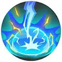

| Attaque | Icône | Description |
|---|---|---|
| Attaque de base |  |
La troisième Attaque de base de Zeraora inflige des dégâts supplémentaires, paralyse l’ennemi et restaure une portion des PV. |
| Talent | Icône | Description |
|---|---|---|
| Absorbe-Volt | Lorsqu’il reçoit des dégâts, Zeraora convertit une partie de ses dégâts subis en bonus d’Attaque. |
| Attaque spéciale 1 | ||
|---|---|---|
| Attaque | Icône | Description |
| Hâte | Charge dans une direction et augmente la vitesse d’attaque de Zeraora pendant une courte durée. | |
| Attaque | Icône | Description |
|---|---|---|
| Niveau 6: Change Eclair Amélioration au niveau 12 |
Charge rapidement dans une direction, infligeant des dégâts aux ennemis touchés et augmentant la vitesse d’attaque de Zeraora. Réutiliser cette capacité permet de revenir à sa position précédente. |
| Attaque | Icône | Description |
|---|---|---|
| Niveau 6: Etincelle Amélioration au niveau 12 |
Bondit sur un ennemi et lui inflige des dégâts. Utiliser l’attaque de base pendant le bond redirige la capacité vers l’ennemi le plus proche. Étincelle peut être utilisé trois fois avant de passer en récupération. |
| Attaque spéciale 2 | ||
|---|---|---|
| Attaque | Icône | Description |
| Tranche | S’élance sur un ennemi et le lacère avec ses griffes, infligeant des dégâts et le projetant dans les airs. | |
| Attaque | Icône | Description |
|---|---|---|
| Niveau 8: Coup d'Jus Amélioration au niveau 14 |
Génère une aura électrique qui inflige des dégâts aux ennemis proches et confère un bouclier au lanceur. Si cette capacité touche un ennemi paralysé, ce dernier est attiré vers le lanceur. Lorsque la capacité se termine, elle inflige à nouveau des dégâts et immobilise les ennemis touchés. |
| Attaque | Icône | Description |
|---|---|---|
| Niveau 8: Eclair Fou Amélioration au niveau 13 |
Charge dans une direction. Si un ennemi est touché, le lanceur réalise un combo d’attaques de base qui inflige des dégâts à la cible et au lanceur. Si Change Éclair ou Étincelle ont été utilisés avant de lancer Éclair fou, le nombre d’attaques est augmenté. |
| Capacité Unite | ||
|---|---|---|
| Attaque | Icône | Description |
| Impact Electrisant Débloquage au niveau 9 |
 | Déchaîne un éclair qui inflige des dégâts en zone et projette les ennemis dans les airs. Une zone de plasma persiste, conférant à Zeraora un bonus aux dégâts et à la portée des Attaques de base. |